🏛️ 汉萨同盟
Hansa Teutonica · 设计：Andreas Steding · Argentum Verlag 原版；Big Box/现行版: Pegasus Spiele 出版 · 2–5 人 · 官方英文规则书全文翻译（14 页 · AI 辅助机翻）
本页收录《汉萨同盟》（Hansa Teutonica, 2009）的原版官方规则书全部 14 页（底本：Pegasus Spiele 官方，4250231718076_gb.pdf），逐页随图排列，点击任意图片即可放大查看；每页下方默认折叠了该页的 AI 辅助中文机翻对照，需要时可展开。规则内容归 Argentum Verlag 原版；Big Box/现行版: Pegasus Spiele 及版权方所有，收录仅供个人学习查阅。
整理说明：机翻对照按本站术语口径对齐（牌库/手牌/回合/轮/板块/指示物等），PDF 图文混排页的语序可能与原书视觉顺序略有出入；规则细节请一律以页面上方原书页面为准。
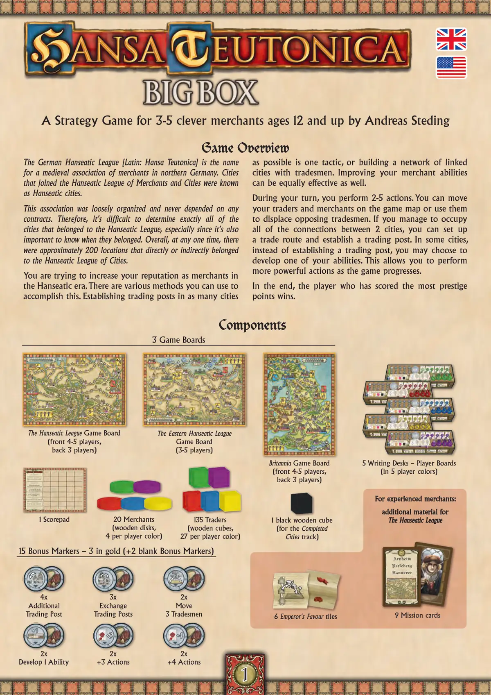
📝 第 1 页 AI 机翻对照（点击展开）
一款由 Andreas Steding 设计，适合 3-5 位聪明商人，12 岁及以上的策略游戏
游戏概览
游戏概览
德意志汉萨同盟 [拉丁语：Hansa Teutonica] 是中世纪德国北部商人的联盟名称。加入汉萨商人与城市同盟的城市被称为汉萨城市。
该联盟组织松散，从不依赖任何合同。因此，很难确定所有属于汉萨同盟的城市，特别是还需要知道它们何时加入。总体而言，在任何时候，大约有 200 个地点直接或间接地属于汉萨城市同盟。
你试图在汉萨时代提升你作为商人的声誉。你可以使用各种方法来实现这一目标。尽可能在更多城市建立贸易站是一种策略，或者通过商人建立连接城市的网络。提升你的商人能力也同样有效。
在你的回合中，你执行 2-5 个行动。你可以在游戏地图上移动你的商人和贸易者，或者用他们取代对手的商人。如果你成功占据了两座城市之间的所有连接，你可以建立一条贸易路线并设立一个贸易站。在某些城市，你可以选择发展你的能力之一，而不是建立贸易站。这使你在游戏过程中能够执行更强大的行动。
最终，获得最多声望点的玩家获胜。
3 个游戏版图
汉萨同盟游戏版图
（正面 4-5 人，背面 3 人）
东汉萨同盟游戏版图
（3-5 人）
不列颠尼亚游戏版图
（正面 4-5 人，背面 3 人）
135 个贸易者
（木质方块，每种玩家颜色 27 个）
5 个写字桌 – 玩家版图
（5 种玩家颜色）
9 张任务卡
配件
配件
6 张皇帝恩惠板块
15 个奖励标记 - 金色各 3 个（+2 个空白奖励标记）
2x
移动
3 个商人
2x
+4 行动
3x
交换
贸易站
2x
+3 行动
4x
额外贸易站
2x
发展 1 项能力
给经验丰富的商人：
给经验丰富的商人：
汉萨同盟的额外配件
汉萨同盟的额外配件
20 个商人
（木质圆盘，每种玩家颜色 4 个）
1 个黑色木质方块
（用于完成城市轨道）
1 个记分板
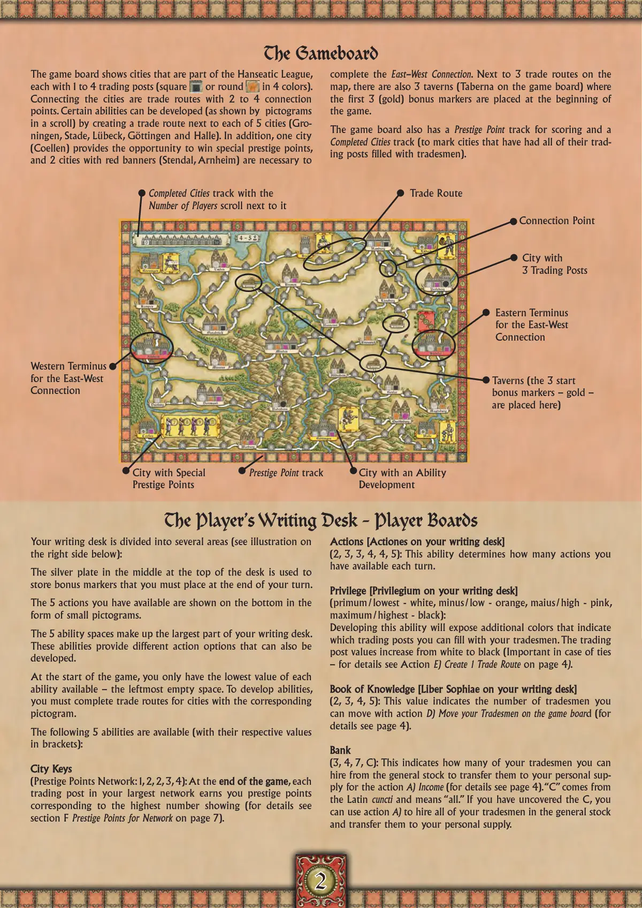
📝 第 2 页 AI 机翻对照（点击展开）
游戏版图
游戏版图展示了汉萨同盟的城市，每个城市有1到4个贸易站（方形或圆形，有4种颜色）。连接城市的是贸易路线，有2到4个连接点。通过在5个城市（格罗宁根、施塔德、吕贝克、哥廷根和哈勒）旁边创建贸易路线，可以发展某些能力（如卷轴中的象形图所示）。此外，一个城市（科隆）提供了赢得特殊声望点的机会，而2个带有红色旗帜的城市（施滕达尔、阿纳姆）是完成东西连接所必需的。在地图上的3条贸易路线旁边，还有3个酒馆（游戏版图上的Taberna），游戏开始时，前3个（金色）奖励标记被放置在这里。
游戏版图还有一个用于计分的声望点轨道和一个已完成城市轨道（用于标记所有贸易站都已填满商人的城市）。
玩家的书桌 - 玩家版图
玩家的书桌 - 玩家版图
你的书桌被分成几个区域（见下方右侧插图）：
书桌顶部中央的银盘用于存放你在回合结束时必须放置的奖励标记。
你拥有的5个可用行动以小象形图的形式显示在底部。
5个能力空间构成了你书桌的大部分。这些能力提供不同的行动选项，这些选项也可以被发展。
游戏开始时，你只有每种能力的最低值可用——最左边的空白空间。要发展能力，你必须为具有相应象形图的城市完成贸易路线。
以下5种能力可用（括号中为各自数值）：
城市钥匙
城市钥匙
（声望点网络：1, 2, 2, 3, 4）：在游戏结束时，你最大网络中的每个贸易站都会让你获得与显示最高数字相对应的声望点（详情见第7节F网络声望点）。
行动 [书桌上的Actiones]
行动 [书桌上的Actiones]
（2, 3, 3, 4, 4, 5）：这个能力决定了你每回合可用的行动数量。
特权 [书桌上的Privilegium]
特权 [书桌上的Privilegium]
（primum/最低 - 白色，minus/低 - 橙色，maius/高 - 粉色，maximum/最高 - 黑色）：
发展这个能力将揭示额外的颜色，表示你可以用商人填充哪些贸易站。贸易站价值从白色到黑色递增（在平局时很重要——详情见行动E）在第4页创建1条贸易路线）。
知识之书 [书桌上的Liber Sophiae]
知识之书 [书桌上的Liber Sophiae]
(2, 3, 4, 5): 这个数值表示你可以通过行动 D) 在游戏版图上移动你的商人的数量（详情请见第 4 页）。
银行
银行
(3, 4, 7, C): 这表示你可以从通用库存中雇佣多少商人，以便通过行动 A) 收入将他们转移到你的个人供应中（详情请见第 4 页）。"C" 源自拉丁语 cuncti，意为"全部"。如果你翻开了 C，你可以使用行动 A) 雇佣通用库存中的所有商人，并将他们转移到你的个人供应中。
声望点轨迹
带有特殊声望点的城市
带有能力的城市
发展
酒馆（3 个起始奖励标记——金币——放置于此）
东西方连接的东端
东西方连接的西端
贸易路线
连接点
带有 3 个贸易站的城市
已完成城市轨迹，旁边有玩家数量卷轴
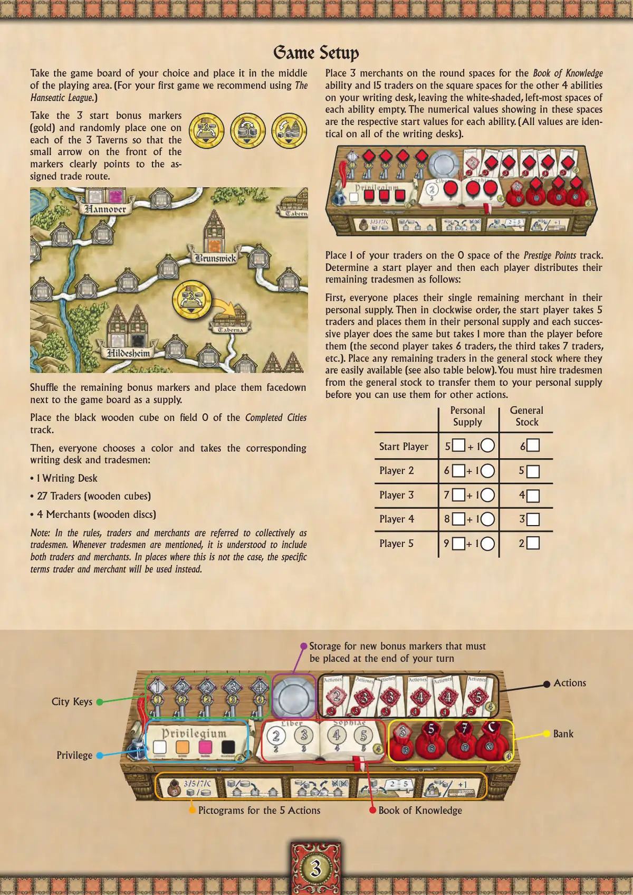
📝 第 3 页 AI 机翻对照（点击展开）
城市钥匙
行动
特权
知识之书
5种行动的象形图
用于存放新获得的奖励指示物，这些指示物必须在你的回合结束时放置
银行
游戏设置
游戏设置
选择你喜欢的游戏版图并将其放置在游戏区域的中央。（第一次游戏我们建议使用汉萨同盟。）
取出3个起始奖励标记（金色）并随机将它们放置在3个酒馆上，使标记正面上的小箭头清晰地指向指定的贸易路线。
将剩余的奖励标记洗混，然后面朝下放置在游戏版图旁边作为供应堆。
将黑色木制骰子放置在"已完成城市"轨道的0格上。
然后，每位玩家选择一种颜色，并拿取相应的写字桌和商人：
• 1个写字桌
• 27个交易者（木制骰子）
• 4个商人（木制圆盘）
注意：在规则中，交易者和商人统称为商人。每当提到商人时，应理解为包括交易者和商人。在需要区分的情况下，将使用具体的术语"交易者"和"商人"。
在你的写字桌上，将3个商人放置在"知识之书"能力的圆形格上，将15个交易者放置在其他4种能力的方形格上，每种能力的最左侧白色阴影格保持空置。这些空间中显示的数值是每种能力的起始值。（所有写字桌上的数值都相同）。
将1个你的交易者放置在"声望点"轨道的0格上。
确定起始玩家，然后每位玩家按以下方式分配剩余的商人：
首先，每位玩家将他们剩下的1个商人放入个人供应区。然后按顺时针顺序，起始玩家拿取5个交易者放入个人供应区，后续每位玩家依次进行，但比前一位玩家多拿取1个（第二位玩家拿取6个交易者，第三位拿取7个，以此类推）。将任何剩余的交易者放入公共库存中，以便于取用（另见下表）。你必须从公共库存中雇佣商人，将他们转移到你的个人供应区后，才能在其他行动中使用他们。
个人供应区 公共库存
起始玩家 5 + 1 6
玩家2 6 + 1 5
玩家3 7 + 1 4
玩家4 8 + 1 3
玩家5 9 + 1 2
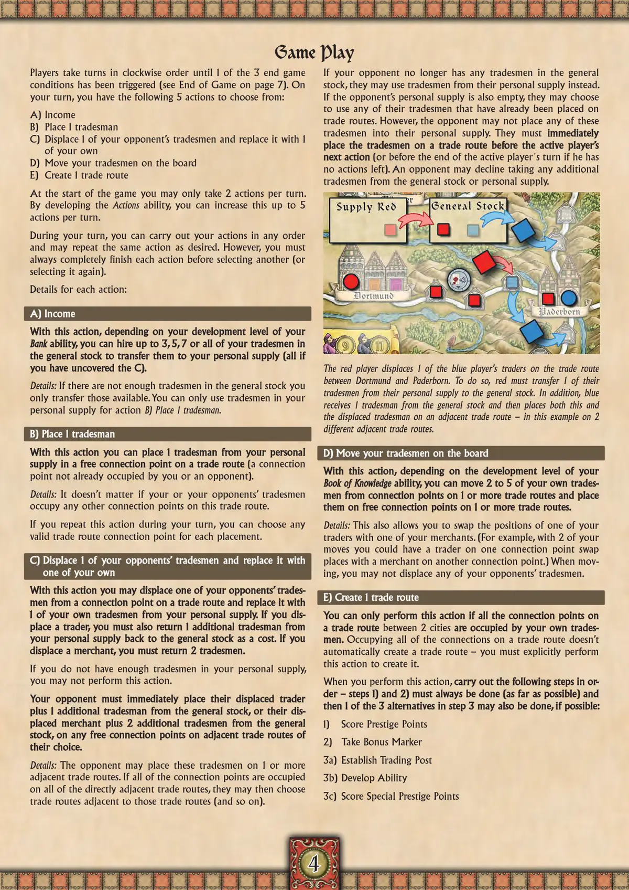
📝 第 4 页 AI 机翻对照（点击展开）
游戏进行
游戏进行
玩家按顺时针顺序轮流进行，直到3个游戏结束条件中的1个被触发（参见第7页的游戏结束）。在你的回合中，你可以从以下5个行动中选择：
A) 收入
B) 放置1个商人
C) 取代1个对手的商人并用自己的商人替换
D) 在版图上移动你的商人
E) 创建1条贸易路线
游戏开始时，每回合你只能执行2个行动。通过发展行动能力，你可以将此数量增加到每回合5个行动。
在你的回合中，你可以按任何顺序执行行动，并且可以根据需要重复相同的行动。但是，在选择另一个行动（或再次选择同一个行动）之前，你必须始终完全完成每个行动。
每个行动的细节：
A) 收入
通过此行动，根据你的银行能力的发展水平，你可以从通用库存中雇佣最多3个、5个、7个或全部的商人，将他们转移到你的个人供应区（如果你已经揭开C，则为全部）。
细节：如果通用库存中没有足够的商人，你只转移那些可用的商人。你只能使用个人供应区中的商人执行行动B) 放置1个商人。
B) 放置1个商人
通过此行动，你可以从你的个人供应区中放置1个商人到贸易路线上的一个空闲连接点（一个未被你或对手占据的连接点）。
细节：无论你或对手的商人占据这条贸易路线上的任何其他连接点都没有关系。如果你在你的回合中重复此行动，你可以为每次放置选择任何有效的贸易路线连接点。
C) 取代1个对手的商人并用自己的商人替换
通过此行动，你可以将对手从贸易路线上的一个连接点赶走，并用你个人供应区中的1个自己的商人替换。如果你赶走一个商人，你还必须从你的个人供应区额外返回1个商人。
将你的个人供应品返还到公共库存作为代价。如果你
将你的个人供应品返还到公共库存作为代价。如果你
取代了一名商人，你必须返还2名商人。
取代了一名商人，你必须返还2名商人。
如果你在个人供应品中没有足够的商人，
如果你在个人供应品中没有足够的商人，
你不能执行此行动。
你的对手必须立即将其被取代的商人
你的对手必须立即将其被取代的商人
加上1名来自公共库存的额外商人，或者将其被
加上1名来自公共库存的额外商人，或者将其被
取代的商人加上2名来自公共库存的额外商人，
取代的商人加上2名来自公共库存的额外商人，
放置在他们选择的任何相邻贸易路线上
放置在他们选择的任何相邻贸易路线上
的空闲连接点上。
的空闲连接点上。
详情：对手可以将这些商人放置在1条或多条
相邻的贸易路线上。如果所有直接相邻的贸易路线
上的所有连接点都被占据，他们可以选择
与这些贸易路线相邻的贸易路线（依此类推）。
如果对手在公共库存中不再有任何商人，
他们可以使用个人供应品中的商人代替。
如果对手的个人供应品也为空，他们可以选择
使用已经放置在贸易路线上的任何商人。然而，对手
不能将这些商人放入他们的个人供应品。他们必须立即
立即
在活跃玩家的下一个行动之前
在活跃玩家的下一个行动之前
将这些商人放置在一条贸易路线上
将这些商人放置在一条贸易路线上
（如果活跃玩家没有剩余行动，则在活跃玩家的回合结束之前）。对手可以拒绝
（如果活跃玩家没有剩余行动，则在活跃玩家的回合结束之前）。对手可以拒绝
从公共库存或个人供应品中获取任何额外商人。
从公共库存或个人供应品中获取任何额外商人。
红色玩家取代了蓝色玩家在多特蒙德和帕德博恩之间
红色玩家取代了蓝色玩家在多特蒙德和帕德博恩之间
贸易路线上的1名商人。为此，红色必须将其个人供应品中的
贸易路线上的1名商人。为此，红色必须将其个人供应品中的
1名商人转移到公共库存。此外，蓝色
1名商人转移到公共库存。此外，蓝色
从公共库存中获得1名商人，然后将这名商人和被取代的商人
从公共库存中获得1名商人，然后将这名商人和被取代的商人
放置在一条相邻的贸易路线上——在这个例子中是放置在2条
放置在一条相邻的贸易路线上——在这个例子中是放置在2条
不同的相邻贸易路线上。
不同的相邻贸易路线上。
D) 移动你版图上的商人
D) 移动你版图上的商人
通过此行动，根据你
通过此行动，根据你
知识之书
知识之书
能力的发展水平，你可以移动2到5名你自己的商人，
能力的发展水平，你可以移动2到5名你自己的商人，
从1条或多条贸易路线上的连接点，
从1条或多条贸易路线上的连接点，
并将他们放置在1条或多条贸易路线上的空闲连接点上。
并将他们放置在1条或多条贸易路线上的空闲连接点上。
详情：这也允许你交换一个你的商人和一个你的贸易者的位置。（例如，用你的2次移动，你可以让一个连接点上的贸易者与另一个连接点上的商人交换位置。）移动时，你不能移动任何对手的贸易者。
E) 创建1条贸易路线
E) 创建1条贸易路线
只有当一条贸易路线
只有当一条贸易路线上连接2个城市
上连接2个城市的所有连接点
的所有连接点都被你自己的贸易者
都被你自己的贸易者占据时，
占据时，你才能执行此行动。
你才能执行此行动。占据一条贸易路线上的所有连接点并不会
占据一条贸易路线上的所有连接点并不会自动创建一条贸易路线——你必须明确执行
自动创建一条贸易路线——你必须明确执行此行动来创建它。
此行动来创建它。
当你执行此行动时，
当你执行此行动时，按顺序执行以下步骤——步骤1)和2)必须总是执行（尽可能），
按顺序执行以下步骤——步骤1)和2)必须总是执行（尽可能），
然后如果可能，还可以执行步骤3中的3个替代选项之一：
然后如果可能，还可以执行步骤3中的3个替代选项之一：
- 获得声望点数
2) 获取奖励标记
3a) 建立贸易站
3b) 发展能力
3c) 获得特殊声望点数
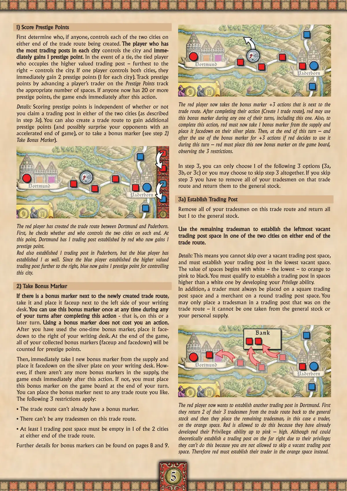
📝 第 5 页 AI 机翻对照（点击展开）
1) 获得声望点
首先确定，如果有人控制，那么是谁控制着正在创建的贸易路线两端的两个城市。在每个城市中拥有最多贸易站的玩家
在每个城市中拥有最多贸易站的玩家控制该城市并立即获得
1个声望点
1个声望点。如果出现平局，占据价值更高的贸易站——最右侧的——的平局玩家控制该城市。如果一个玩家同时控制两个城市，他们立即获得2个声望点（每个城市1个）。通过在声望点轨道上将玩家的交易者前进相应数量的格数来追踪声望点。如果现在有任何人拥有20个或更多声望点，游戏在此行动后立即结束。
详情：获得声望点与你是否在两个城市中的任何一个宣称贸易站（如步骤3a所述）无关。你也可以创建一条贸易路线来获得额外的声望点（并可能通过加速游戏结束来让对手惊讶），或者获得一个奖励标记（见步骤2）获得奖励标记）。
红色玩家创建了多特蒙德和帕德博恩之间的贸易路线。首先，他检查谁控制两端的两个城市。此时，多特蒙德有1个由红色玩家建立的贸易站，红色玩家现在获得1个声望点。
红色玩家也在帕德博恩建立了1个贸易站，但蓝色玩家也建立了1个。由于蓝色玩家建立了更靠右的价值更高的贸易站，蓝色玩家现在因控制这座城市而获得1个声望点。
2) 获取奖励标记
如果新创建的贸易路线旁边有一个奖励标记
如果新创建的贸易路线旁边有一个奖励标记，，
拿取它并将其正面朝上放置在你的写字桌左侧。你可以在完成此行动后的任何
你可以在完成此行动后的任何
回合中的任何时间使用一次此奖励标记
回合中的任何时间使用一次此奖励标记——即在本回合或之后的回合。使用奖励标记不消耗你的行动。
使用奖励标记不消耗你的行动。
在你使用了一次性奖励标记后，将其正面朝下放置在你的写字桌右侧。游戏结束时，
你收集的所有奖励标记（正面朝上和正面朝下）都将被计算为声望点。
然后，立即从供应堆中拿取1个新的奖励标记，并将其正面朝下放置在你的写字桌上的银色盘子上。然而，如果供应堆中没有更多的奖励标记，游戏在此行动后立即结束。如果没有，你必须在本回合结束时将此奖励标记放置到游戏板上。
你可以将奖励指示物放置在你喜欢的任何贸易路线上。
以下3项限制适用：
• 该贸易路线上不能已有奖励指示物。
• 该贸易路线上不能有任何商人。
• 该贸易路线两端的两个城市中，至少必须有1个贸易站格是空的。
关于奖励指示物的更多细节可以在第8页和第9页找到。
现在红方玩家拿走位于该贸易路线旁的+3行动奖励指示物。在完成其行动（创建1条贸易路线）后，红方可以在其任何回合（包括本回合）期间使用此奖励指示物。此外，为完成此行动，红方必须现在从供应区中拿取1个奖励指示物，并将其面朝下放在其银盘上。然后，在本回合结束时——如果红方决定在本回合期间使用该奖励指示物以获得+3行动——红方必须将这个新的奖励指示物放置到游戏板上，遵守3项限制。
在第3步，你只能选择以下3个选项中的1个（3a、3b或3c），或者你也可以选择完全跳过第3步。如果你跳过第3步，你必须将该贸易路线上所有的商人移除并将它们归还到公共库存中。
3a) 建立贸易站
移除该贸易路线上你所有的商人，并将除1个外的所有商人归还到公共库存。
使用剩下的商人在该贸易路线两端的两个城市中的一个中，建立最左侧的空贸易站格。
详情：这意味着你不能跳过空的贸易站格，必须将你的贸易站建立在最低的空格上。格子的价值从白色（最低）开始，到橙色、粉色再到黑色。你必须通过发展你的特权能力，才有资格在高于白色的格子上建立贸易站。此外，商人必须总是放置在方形的贸易站格上，而商人必须放置在圆形的贸易站格上。你只能将商人放置在位于该贸易路线上的贸易站中——不能是从公共库存或你个人库存中取出的商人。
红方玩家现在想在多特蒙德建立另一个贸易站。首先，他们将其在该贸易路线上的3个商人中的2个归还到公共库存，然后将剩下的商人（在这种情况下是一个商人）放置在橙色格子上。红方被允许这样做，因为他们已经将他们的特权能力发展到粉色——高级。尽管红方理论上可以由于其特权而在最右侧建立贸易站；但他们不能这样做，因为不允许跳过空的贸易站
太空。因此红色玩家必须在橙色太空建立他们的贸易站。
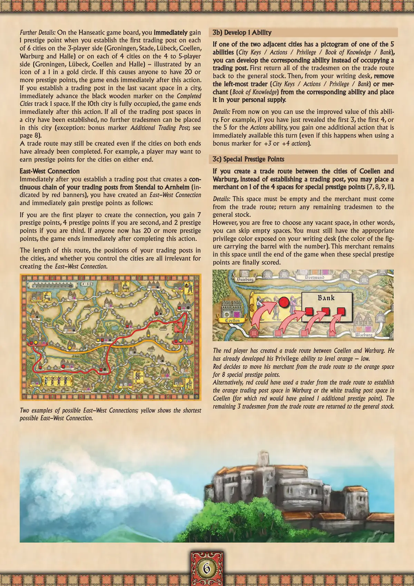
📝 第 6 页 AI 机翻对照（点击展开）
进一步细节：在汉萨同盟游戏版图上，当你在3人版图一侧的6个城市（格罗宁根、施塔德、吕贝克、科伦、瓦尔堡和哈勒）中的每个城市上建立第一个贸易站，或者在4-5人版图一侧的4个城市（格罗宁根、吕贝克、科伦和哈勒）中的每个城市上建立第一个贸易站时，你立即获得1声望点（由金色圆圈中的1图标表示）。如果这导致任何玩家拥有20个或更多声望点，游戏在此行动后立即结束。
如果你在一个城市的最后一个空位上建立贸易站，立即将"已完成城市"轨道上的黑色木质指示物前进1格。如果第10个城市被完全占据，游戏在此行动后立即结束。如果一个城市的所有贸易站位都已建立，则不能再在此城市放置更多商人（例外：额外贸易站奖励标记；见第8页）。
即使两端的城市已经完成，贸易路线仍然可以建立。例如，玩家可能想为两端的城市获得声望点。
东西连接
在你建立贸易站并形成从施滕达尔到阿纳姆（由红色横幅标示）的连续贸易站链后，你立即创建了东西连接并获得如下声望点：
如果你是第一个建立连接的玩家，你获得7点声望；第二个建立的玩家获得4点；第三个建立的玩家获得2点。如果现在有玩家拥有20个或更多声望点，游戏在此行动完成后立即结束。
这条路线的长度、你的贸易站在城市中的位置以及你是否控制这些城市，对于建立东西连接都无关紧要。
两个可能的东西连接示例；黄色显示了最短的可能的连接。
3b) 发展1项能力
如果两个相邻城市中的一个有5项能力之一（城市钥匙/行动/特权/知识之书/银行）的象形图，你可以发展相应能力，而不是占据贸易站。首先，将贸易路线上的所有商人归还到通用库存中。然后，从你的写字桌中，移除最左边的商人
3c) 特殊声望点
如果你在 Coellen 和 Warburg 这两个城市之间创建贸易路线，你可以选择不建立贸易站，而是将一名商人放置在 4 个特殊声望点空间中的一个（7、8、9、11）。
详情：该空间必须为空，且商人必须来自该贸易路线；将剩余的商人返还到公共库存。然而，你可以自由选择任何空位，换句话说，你可以跳过空位。你仍然需要在你的书桌上展示相应的特权颜色（携带带数字桶的图形的颜色）。这名商人将一直留在这个空间，直到游戏结束时这些特殊声望点最终被计分。
红色玩家已在 Coellen 和 Warburg 之间创建了贸易路线。他已经将他的特权能力发展到橙色-低级别。红色决定将他的商人从贸易路线移动到橙色空间，获得 8 个特殊声望点。
或者，红色可以使用贸易路线中的一名商人在 Warburg 建立橙色贸易站空间或在 Coellen 建立白色贸易站空间（这样红色将获得 1 个额外声望点）。贸易路线中剩余的 3 名商人被返还到公共库存。
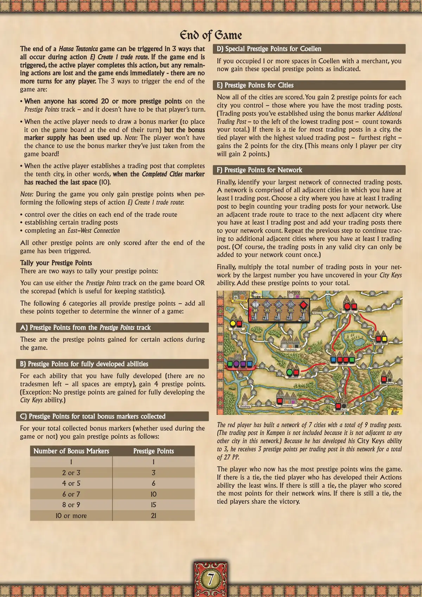
📝 第 7 页 AI 机翻对照（点击展开）
游戏结束
游戏结束
一场汉萨条顿尼亚游戏的结束可以通过3种方式触发，这些方式都发生在行动E)创建1条贸易路期间。如果游戏结束被触发，当前玩家完成此行动，但任何剩余行动都将丢失，游戏立即结束 - 任何玩家都没有更多回合了。
触发游戏结束的3种方式是：
• 当任何人在声望点数轨道上获得20或更多声望点数时 - 而且不一定是该玩家的回合。
• 当当前玩家需要抽取一个奖励标记（在其回合结束时放置到游戏版图上）但奖励标记供应已耗尽时。注意：玩家将没有机会使用他们刚从游戏版图上取出的奖励标记！
• 当当前玩家建立一个贸易站，完成了第十个城市时，换句话说，当已完成城市标记到达最后一个格子(10)时。
注意：在游戏期间，只有在执行行动E)创建1条贸易路线的以下步骤时，你才会获得声望点：
• 控制贸易路线两端的城市
• 建立特定贸易站
• 完成东西连接
所有其他声望点只有在游戏结束被触发后才计分。
计算你的声望点
有两种方式计算你的声望点：
你可以使用游戏版图上的声望点数轨道或记分板（这对统计数据很有用）。
以下6个类别都提供声望点 - 将这些点数相加以确定游戏的获胜者：
A) 声望点数轨道上的声望点
这些是在游戏期间因某些行动获得的声望点。
B) 完全发展能力的声望点
对于每个你完全发展的能力（没有商人剩余 - 所有格子都是空的），获得4点声望。（例外：完全发展城市钥匙能力不会获得声望点。）
C) 收集的奖励标记总数的声望点
对于你收集的奖励标记总数（无论在游戏期间是否使用），你将获得如下声望点：
奖励指示物数量
声望点数
2 或 3
4 或 5
6 或 7
8 或 9
10 或更多
D) Coellen的特殊声望点
D) Coellen的特殊声望点
如果你在Coellen(科伦)用商人占据了1个或更多区域，你现在将获得如所示的特殊声望点。
E) 城市的声望点
E) 城市的声望点
现在所有城市都将进行计分。你每控制一个城市获得2点声望——即你在该城市拥有最多贸易站的城市。（使用奖励指示物额外贸易站——在最低贸易站的左侧——建立的贸易站计入你的总数。）如果一个城市中最多的贸易站出现平局，则拥有最高价值贸易站——最右侧——的平局玩家获得该城市的2分。（这意味着每个城市只有1名玩家能获得2分。）
F) 网络的声望点
F) 网络的声望点
最后，确定你最大的相连贸易站网络。一个网络由所有相邻城市组成，你在这些城市中至少拥有1个贸易站。选择一个你至少拥有1个贸易站的城市开始计算你的网络贸易站数量。使用相邻的贸易路线追踪到下一个相邻城市，你在该城市至少拥有1个贸易站，并将那里的贸易站数量加入你的网络计数。重复上一步继续追踪到其他相邻城市，你在这些城市中至少拥有1个贸易站。（当然，任何有效城市中的贸易站只能被加入你的网络计数一次。）
最后，将你网络中的贸易站总数乘以你在城市钥匙能力中已解锁的最大数字。将这些声望点加入你的总分。
红色玩家建立了一个包含7个城市、共9个贸易站的网络。（Kampen(坎彭)的贸易站未包含在内，因为它不与该网络中的任何其他城市相邻。）因为他已将他的城市钥匙能力发展到3级，他在此网络中每个贸易站获得3点声望，总计27点声望。
现在拥有最多声望点的玩家赢得游戏。如果出现平局，则行动能力发展最少的平局玩家获胜。如果仍然平局，则网络得分最高的玩家获胜。如果仍然平局，则平局玩家共享胜利。
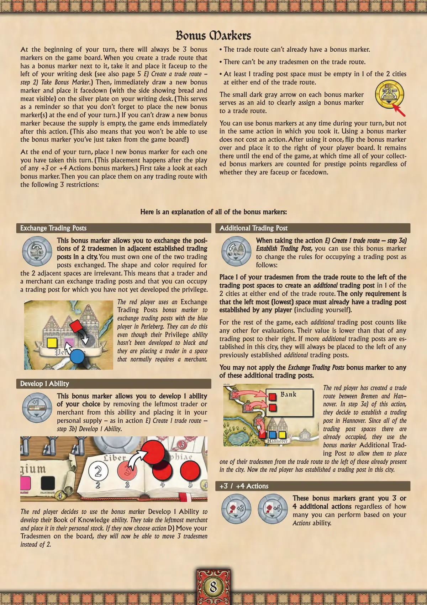
📝 第 8 页 AI 机翻对照（点击展开）
以下是所有奖励标记的说明：
交换贸易站
此奖励标记允许您交换相邻已建立贸易站中2名商人的位置。您必须拥有被交换的两个贸易站中的一个。对两个相邻空间所需形状和颜色的要求无关紧要。这意味着商人和商人可以交换贸易站，您可以占据一个您尚未开发特权的贸易站。
红色玩家使用交换贸易站奖励标记与蓝色玩家在佩尔贝格(Perleberg)交换贸易站。他们可以这样做，即使他们的特权能力尚未开发到黑色等级，并且他们正在放置一个通常需要商人的空间中的商人。
开发1个能力
此奖励标记允许您通过将此能力中最左边的商人或商人移除并将其放入您的个人供应中，来选择开发1个能力——如同行动 E) 创建1条贸易路线——步骤 3b) 开发1个能力。
红色玩家决定使用奖励标记开发1个能力来开发他们的知识之书能力。他们拿走最左边的商人并将其放入他们的个人库存中。如果他们现在选择行动 D) 在版图上移动您的商人，他们将能够移动3名商人而不是2名。
额外贸易站
当执行行动 E) 创建1条贸易路线——步骤 3a) 建立贸易站时，您可以使用此奖励标记来更改占据贸易站的规则，如下所示：
将您的1名商人从贸易路线放置到贸易站空间的左侧，以在贸易路线任一端的2个城市中的1个中创建额外贸易站。唯一的要求是最左边的（最低的）空间必须已经由任何玩家（包括您自己）建立了贸易站。
在游戏的剩余时间里，每个额外贸易站都像其他任何贸易站一样计入评估。它们的价值低于其右侧的任何贸易站。如果在这个城市中建立了更多额外贸易站，它们将总是放置在任何先前建立的额外贸易站的左侧。
你不能将交易所贸易站
你不能将交易所贸易站
奖励标记应用于任何
奖励标记应用于任何
这些额外的贸易站。
这些额外的贸易站。
红色玩家已在不来梅和汉诺威之间创建了贸易路线。在此行动的步骤 3a) 中，他们决定在汉诺威建立一个贸易站。由于该处的所有贸易站位置都已被占用，他们使用奖励标记"额外贸易站"，允许他们将贸易路线中的一个商人放置在该城市已有贸易站的左侧。现在红色玩家已在此城市建立了一个贸易站。
+3 / +4 行动
+3 / +4 行动
这些奖励标记授予你 3 或
这些奖励标记授予你 3 或
4 个额外行动
4 个额外行动，无论你的行动能力允许你执行多少个行动。
奖励标记
奖励标记
在你的回合开始时，游戏板上总会有 3 个奖励标记。当你创建的贸易路线旁边有一个奖励标记时，拿取它并将其正面朝上放置在你的书桌左侧（另见第 5 页 E) 创建贸易路线 - 步骤 2) 拿取奖励标记）。然后，立即抽取一个新的奖励标记，并将其面朝下（显示面包和肉的一面可见）放置在你书桌上的银盘上。（这作为提醒，以免你在回合结束时忘记放置新的奖励标记。）如果你无法抽取新的奖励标记因为供应已空，游戏在此行动后立即结束。（这也意味着你将无法使用你刚从游戏板上拿取的奖励标记！）
在你的回合结束时，为你本回合拿取的每个奖励标记放置 1 个新奖励标记。（此放置发生在任何 +3 或 +4 行动奖励标记的使用之后。）首先查看每个奖励标记。然后你可以将它们放置在任何贸易路线上，但有以下 3 个限制：
• 贸易路线不能已经有奖励标记。
• 贸易路线上不能有任何商人。
• 贸易路线两端的两个城市中，至少有一个城市的贸易站位置必须为空。
每个奖励标记上的小深灰色箭头作为辅助工具，用于清晰地将奖励标记分配给贸易路线。
你可以在你的回合期间的任何时间使用奖励标记，但不能在拿取它的同一行动中使用。使用奖励标记不消耗行动。使用一次后，将奖励标记翻转并放置在你的玩家板右侧。它将留在那里直到游戏结束，届时你收集的所有奖励标记都将被计算为威望点数，无论它们是正面朝上还是朝下。
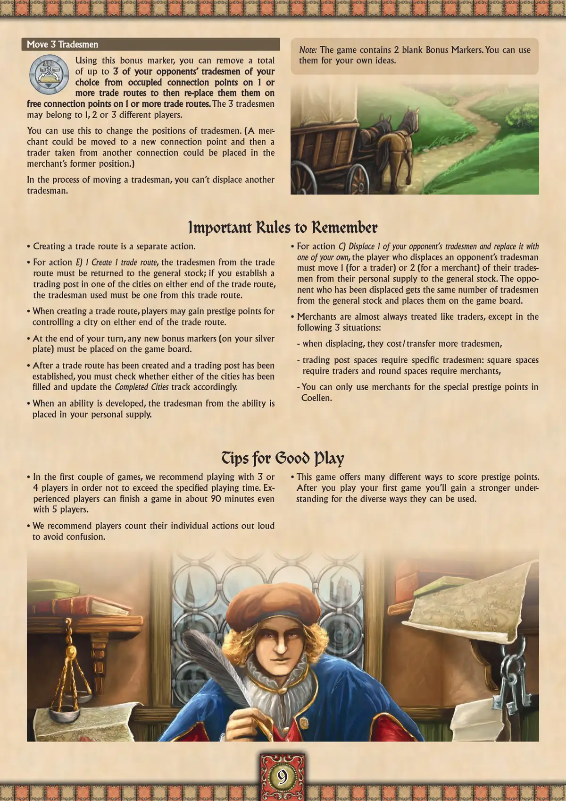
📝 第 9 页 AI 机翻对照（点击展开）
移动3个商人
移动3个商人
使用这个奖励标记，你可以总共移除最多3个你对手的商人，从1条或多条贸易路线上被占用的连接点，然后将它们重新放置到1条或多条贸易路线上的空闲连接点。这3个商人可以属于1、2或3个不同的玩家。
你可以用这个来改变商人的位置。（一个商人可以被移动到一个新的连接点，然后从另一个连接点取来的交易者可以被放置在商人之前的位置。）
在移动商人的过程中，你不能替换另一个商人。
需要记住的重要规则
需要记住的重要规则
• 创建一条贸易路线是一个独立的行动。
• 对于行动 E) 1 创建1条贸易路线，贸易路线上的商人必须归还到通用库存中；如果你在贸易路线任一端的城市中建立一个贸易站，使用的商人必须来自这条贸易路线。
• 创建贸易路线时，玩家可能因为控制贸易路线任一端的城市而获得声望点。
• 在你的回合结束时，任何新的奖励标记（在你的银盘上）必须放置到游戏版图上。
• 一条贸易路线被创建并且一个贸易站被建立后，你必须检查两个城市是否已被填满，并相应地更新已完成城市轨道。
• 当一个能力被开发时，能力中的商人被放置在你的个人供应中。
• 对于行动 C) 替换1个你对手的商人并换上你自己的一个，替换对手商人的玩家必须移动1个（对于交易者）或2个（对于商人）他们自己的商人从个人供应到通用库存。被替换的对手获得相同数量的商人从通用库存，并将它们放置到游戏版图上。
• 商人几乎总是被视为与交易者相同，除了以下3种情况：
- 替换时，它们需要/转移更多的商人，
- 贸易站空间需要特定的商人：方形空间需要交易者，圆形空间需要商人，
- 你只能在Coellen使用商人获得特殊的声望点。
良好游戏技巧
良好游戏技巧
• 在最初的几局游戏中，我们建议3或4名玩家游戏，以不超过指定的游戏时间。有经验的玩家即使有5名玩家也能在约90分钟内完成一局游戏。
• 我们建议玩家大声数出他们的个人行动，以避免混淆。
• 本游戏提供了许多不同的方式来获得声望点。
在你玩过第一局游戏后，你将更深入地理解它们可以被使用的多种方式。
注意：游戏包含2张空白奖励标记。你可以将它们用于你自己的创意。
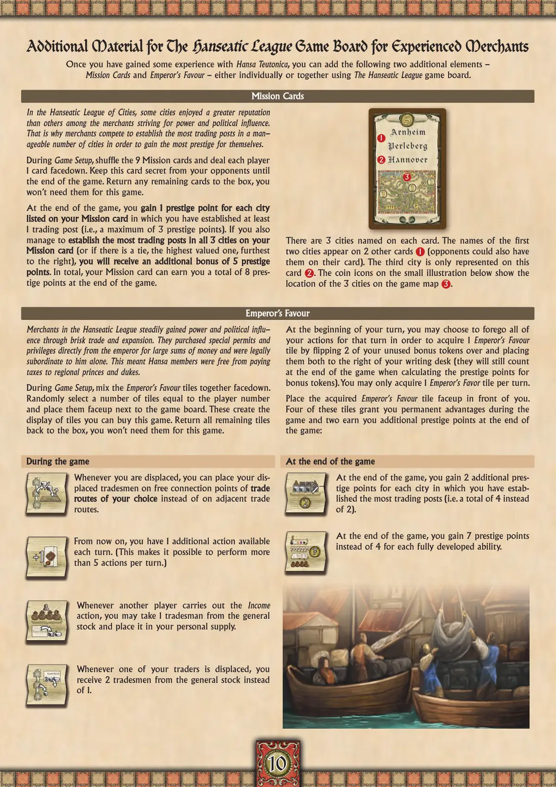
📝 第 10 页 AI 机翻对照（点击展开）
1010
《汉萨同盟》附加材料
《汉萨同盟》资深商人游戏版图
当你对《汉萨同盟》获得一些经验后，你可以添加以下两个附加要素——任务卡和皇帝恩宠——可以单独使用，也可以一起使用《汉萨同盟》游戏版图。
任务卡
在汉萨同盟城市中，一些城市在追求权力和政治影响力的商人中享有比其他城市更高的声誉。这就是为什么商人们竞争在可管理数量的城市中建立最多的贸易站，以为自己赢得最多的声望。
在游戏设置期间，洗混9张任务卡，然后给每位玩家发1张面朝下的牌。将这张牌对对手保密，直到游戏结束。将剩余的牌放回盒中，本游戏不需要它们。
在游戏结束时，你会在你的任务卡上列出的每个城市中获得1点声望，前提是你在该城市中至少建立了1个贸易站（即最多3点声望）。如果你还成功地在你的任务卡上的所有3个城市中建立了最多的贸易站（或者如果平局，则是价值最高、最右侧的那个），你将额外获得5点声望奖励。总计，你的任务卡在游戏结束时可以为你赚取最多8点声望。
每张卡上命名了3个城市。前两个城市的名称出现在另外2张卡上1（对手也可能在他们卡上有）。第三个城市只出现在这张卡上2。小插图下方的硬币图标显示了这3个城市在游戏地图上的位置3。
皇帝恩宠
汉萨同盟的商人通过活跃的贸易和扩张稳步获得权力和政治影响力。他们花费巨款直接从皇帝那里购买特殊许可证和特权，并且在法律上只对他负责。这意味着汉萨成员免于向地区王子和公爵缴税。
在游戏设置期间，将皇帝恩宠板块面朝下混在一起。随机选择与玩家数量相等的板块数量，并将它们面朝上放在游戏版图旁边。这些构成了本游戏你可以购买的板块展示。将所有剩余的板块放回盒中，本游戏不需要它们。
在你的回合开始时，你可以选择放弃该回合的所有行动，以获得1个皇帝恩宠。
通过翻转你未使用的2个奖励指示物并将它们都放置在你的书桌右侧来获得一块板块（在计算奖励指示物的声望点数时，它们仍会在游戏结束时计入）。每回合你只能获得1块皇帝恩宠板块。将获得的皇帝恩宠板块面朝上放置在你面前。
其中四块板块在游戏期间为你提供永久优势，两块板块在游戏结束时为你赚取额外的声望点数：
游戏期间
游戏期间
每当你的商人被替换时，你可以将你的被替换商人放置在你选择的贸易路线上空闲的连接点上，而不是放置在相邻的贸易路线上。
从现在起，你每回合有1个额外的行动可用。（这使得每回合可以执行超过5个行动。）
每当其他玩家执行收入行动时，你可以从公共库存中拿取1个商人并将其放置在你的个人储备中。
每当你的一个商人被替换时，你从公共库存中获得2个商人而不是1个。
游戏结束时
游戏结束时
游戏结束时，对于每个你建立了最多贸易站的城市，你获得2个额外的声望点数（即总共4个而不是2个）。
游戏结束时，对于每个完全发展的能力，你获得7个声望点而不是4个。
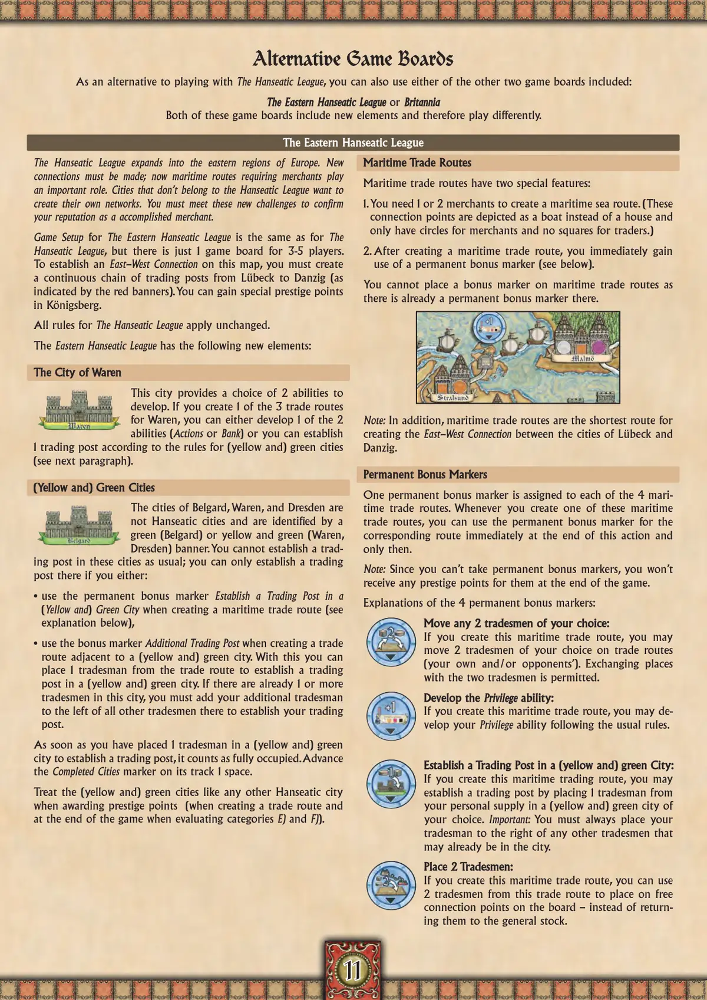
📝 第 11 页 AI 机翻对照（点击展开）
1111
替代游戏版图
替代游戏版图
除了使用汉萨同盟游戏版图外，你也可以使用包含在内的其他两个游戏版图中的任意一个：
东汉萨同盟
东汉萨同盟或不列颠
不列颠
这两个游戏版图都包含新元素，因此游戏玩法不同。
东汉萨同盟
东汉萨同盟
汉萨同盟扩展到欧洲东部地区。必须建立新的连接；现在需要商人的海上路线扮演着重要角色。不属于汉萨同盟的城市想要创建自己的网络。你必须应对这些新挑战，以确认你作为成功商人的声誉。
东汉萨同盟的游戏设置与汉萨同盟相同，但3-5名玩家只有1个游戏版图。
要在这张地图上建立东西连接，你必须从吕贝克到但泽（如红色旗帜所示）创建一条连续的贸易站链。你可以在柯尼斯堡获得特殊的声望点。
汉萨同盟的所有规则保持不变。
东汉萨同盟有以下新元素：
瓦伦城
瓦伦城
这座城市提供2种能力可供发展。如果你为瓦伦创建了3条贸易路线中的1条，你可以选择发展2种能力（行动或银行）中的1种，或者根据（黄色和）绿色城市的规则建立1个贸易站（见下一段）。
（黄色和）绿色城市
（黄色和）绿色城市
贝尔加德、瓦伦和德累斯顿这些城市不是汉萨城市，通过绿色（贝尔加德）或黄色和绿色（瓦伦、德累斯顿）旗帜标识。你不能像往常一样在这些城市建立贸易站；只有当你满足以下条件时，才能在这些城市建立贸易站：
• 在创建海上贸易路线时使用永久奖励标记"在（黄色和）绿色城市建立贸易站"（见下文解释），
• 在创建与（黄色和）绿色城市相邻的贸易路线时使用奖励标记"额外贸易站"。使用这个标记，你可以将1名商人从贸易路线中取出，在（黄色和）绿色城市建立贸易站。如果这个城市已经有1名或更多商人，你必须将你的额外商人放在所有其他商人的左侧，以建立你的贸易站。
一旦你在（黄色和）绿色城市放置了1名商人来建立贸易站，它就被视为完全占用。在其轨道上将"已完成城市"标记前进1格。
在授予声望点时（创建贸易路线时和游戏结束时评估类别E和F时），将（黄色和）绿色城市视为任何其他汉萨城市。
海上贸易路线
海上贸易路线
海上贸易路线有两个特殊特性：
- 你需要1或2个商人来创建海上贸易路线。（这些连接点被描绘成船只而不是房屋，只有商人的圆圈，没有商人的方块。）
- 创建海上贸易路线后，你立即获得使用永久奖励标记（见下文）的权利。
你不能在海上贸易路线上放置奖励标记，因为那里已经有一个永久奖励标记了。
注意：此外，海上贸易路线是创建吕贝克（Lübeck）和但泽（Danzig）城市之间东西连接的最短路线。
永久奖励标记
四个海上贸易路线中的每一条都分配有一个永久奖励标记。每当您创建这些海上贸易路线之一时，您可以在该行动结束时立即使用相应路线的永久奖励标记，并且只能在那时使用。
注意：由于您不能拿取永久奖励标记，因此在游戏结束时您不会因它们获得任何声望点。
四个永久奖励标记的解释：
- 移动任意2个商人：
如果您创建这条海上贸易路线，您可以在贸易路线上移动任意2个商人（您自己的和/或对手的）。允许与这两个商人交换位置。
- 发展特权能力：
如果您创建这条海上贸易路线，您可以按照常规规则发展您的特权能力。
- 在（黄色和）绿色城市中建立贸易站：
如果您创建这条海上贸易路线，您可以通过从您的个人供应中放置1个商人到您选择的（黄色和）绿色城市中来建立贸易站。重要：您必须始终将您的商人放置在可能已经在该城市中的任何其他商人的右侧。
- 放置2个商人：
如果您创建这条海上贸易路线，您可以使用这条贸易路线上的2个商人放置在版图上的空闲连接点上——而不是将它们归还到通用库存中。
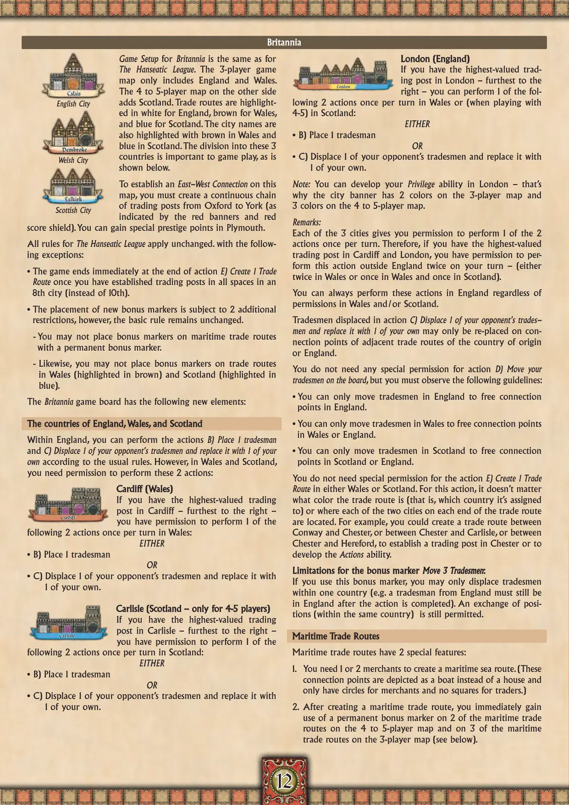
📝 第 12 页 AI 机翻对照（点击展开）
1212
不列颠尼亚
不列颠尼亚
英格兰城市
威尔士城市
苏格兰城市
不列颠尼亚的游戏设置与汉萨同盟相同。3人游戏地图仅包括英格兰和威尔士。另一面的4-5人地图则增加了苏格兰。贸易路线以白色高亮显示英格兰，棕色显示威尔士，蓝色显示苏格兰。城市名称也在威尔士用棕色高亮，在苏格兰用蓝色高亮。这3个国家的划分对游戏很重要，如下所示。
要在这张地图上建立东西连接，你必须从牛津到约克创建一条连续的贸易站链（如红色旗帜和红色记分盾所示）。你可以在普利茅斯获得特殊声望点。
汉萨同盟的所有规则保持不变，但有以下例外：
• 一旦你在第8个城市（而非第10个城市）的所有区域建立了贸易站，游戏在行动E)创建1条贸易路线结束时立即结束。
• 新奖励标记的放置受2个额外限制，但基本规则保持不变。
- 你不能在有永久奖励标记的海上贸易路线上放置奖励标记。
- 同样，你不能在威尔士（棕色高亮）和苏格兰（蓝色高亮）的贸易路线上放置奖励标记。
不列颠尼亚游戏版图有以下新元素：
英格兰、威尔士和苏格兰的国家
英格兰、威尔士和苏格兰的国家
在英格兰内，你可以根据通常规则执行行动B)放置1名商人和行动C)替换1名对手的商人并用自己的商人取而代之。然而，在威尔士和苏格兰，你需要执行这2个行动的许可：
加的夫（威尔士）
加的夫（威尔士）
如果你在加的夫拥有价值最高的贸易站——最右边的那个——你每回合可以在威尔士执行以下2个行动中的1个：
要么
• B) 放置1名商人
要么
• C) 替换1名对手的商人并用自己的商人取而代之。
卡莱尔（苏格兰——仅限4-5人游戏）
卡莱尔（苏格兰——仅限4-5人游戏）
如果你在卡莱尔拥有价值最高的贸易站——最右边的那个——你每回合可以在苏格兰执行以下2个行动中的1个：
要么
• B) 放置1名商人
要么
• C) 替换1名对手的商人并用自己的商人取而代之。
伦敦（英格兰）
伦敦（英格兰）
如果你在伦敦拥有价值最高的贸易站——最右边的那个——你每回合可以在威尔士或（当进行4-5人游戏时）在苏格兰执行以下2个行动中的1个：
要么
• B) 放置1名商人
要么
• C) 替换1名对手的商人并用自己的商人取而代之。
注意：你可以在伦敦发展你的特权能力——这就是为什么在3人版图上城市横幅有2种颜色，而在4至5人版图上有3种颜色的原因。
备注：
3座城市中的每一座都允许你在每个回合执行2个行动中的1个。因此，如果你在加的夫和伦敦拥有价值最高的贸易站，你可以在你的回合中在英格兰之外执行此行动两次——（要么在威尔士执行两次，要么在威尔士执行一次，在苏格兰执行一次）。
无论威尔士和/或苏格兰的权限如何，你始终可以在英格兰执行这些行动。
行动C）中被替换的商人：被替换的1个对手的商人只能被重新放置在其原产国或英格兰的相邻贸易路线的连接点上。
你不需要行动D）在版图上移动你的商人所需的任何特殊权限，但你必须遵守以下准则：
• 你只能将英格兰的商人移动到英格兰的空闲连接点。
• 你只能将威尔士的商人移动到威尔士或英格兰的空闲连接点。
• 你只能将苏格兰的商人移动到苏格兰或英格兰的空闲连接点。
你不需要行动E）在威尔士或苏格兰创建1条贸易路线的特殊权限。对于此行动，贸易路线的颜色（即其分配到的国家）或贸易路线两端的两座城市的所在位置都不重要。例如，你可以在康威和切斯特之间，或在切斯特和卡莱尔之间，或在切斯特和赫里福德之间创建一条贸易路线，以便在切斯特建立贸易站或发展行动能力。
奖励标记的限制
奖励标记的限制 移动3个商人
移动3个商人：
如果你使用此奖励标记，你只能在一个国家内替换商人（例如，行动完成后，英格兰的商人必须仍在英格兰）。在同一国家内交换位置仍然被允许。
海上贸易路线
海上贸易路线
海上贸易路线有2个特殊特性：
- 你需要1个或2个商人来创建海上航线。（这些连接点被绘制成船只而不是房屋，只有商人的圆圈，没有商人的方块。）
- 创建海上贸易路线后，你立即获得在4至5人版图的2条海上贸易路线上，以及在3人版图的3条海上贸易路线上使用永久奖励标记的权利（见下文）。
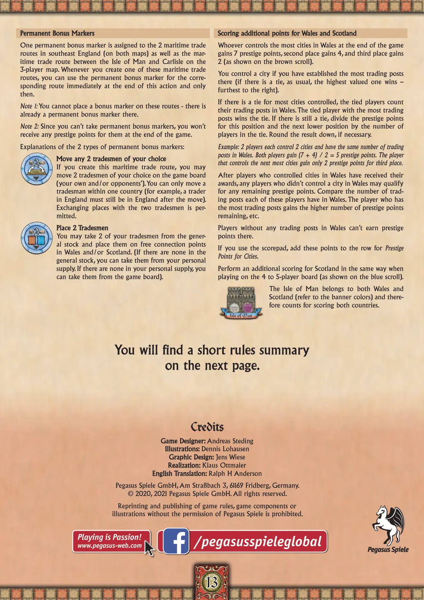
📝 第 13 页 AI 机翻对照（点击展开）
1313
永久奖励标记
永久奖励标记
一个永久奖励标记被分配给英格兰东南部的2条海上贸易路线（在两张地图上）以及3人版图上马恩岛与卡莱尔之间的海上贸易路线。当你创建这些海上贸易路线之一时，你可以在该行动结束时立即使用相应路线的永久奖励标记，并且仅限于此。
注释1：你不能在这些路线上放置奖励标记——那里已经有一个永久奖励标记了。
注释2：由于你不能获得永久奖励标记，因此在游戏结束时你不会获得任何声望点。
两种永久奖励标记的解释：
移动任意2个商人
移动任意2个商人
如果你创建这条海上贸易路线，你可以移动棋盘上任意2个商人（你自己的和/或对手的）。你只能在一个国家内移动商人（例如，英格兰的商人移动后必须仍在英格兰）。
允许与两个商人交换位置。
放置2个商人
放置2个商人
你可以从通用库存中取出2个你的商人，并放置在威尔士和/或苏格兰的空闲连接点上。（如果通用库存中没有，你可以从你的个人供应中取出。如果个人供应中也没有，你可以从棋盘上取出）。
威尔士和苏格兰的额外计分
威尔士和苏格兰的额外计分
游戏结束时，在威尔士控制最多城市的玩家获得7点声望，第二名获得4点，第三名获得2点（如棕色卷轴所示）。
如果你在一个城市建立了最多的贸易站，你就控制了这个城市（如果有平局，如往常一样，价值最高的获胜——最右边的）。
如果对控制的城市数量有平局，则平局玩家计算他们在威尔士的贸易站数量。贸易站数量最多的平局玩家赢得平局。如果仍然平局，将该位置和下一个较低位置的声望点数除以平局玩家数。如有必要，结果向下取整。
示例：2名玩家各控制2个城市，在威尔士有相同数量的贸易站。两名玩家各获得(7 + 4) / 2 = 5点声望。控制下一个最多城市的玩家仅获得第三名的2点声望。
在控制了威尔士城市的玩家获得奖励后，任何没有在威尔士控制城市的玩家可能有资格获得剩余的声望点。比较这些玩家在威尔士的贸易站数量。拥有最多贸易站的玩家获得剩余的较高声望点数，以此类推。
在威尔士没有任何贸易站的玩家无法在那里获得声望点。
如果使用记分板，将这些点添加到"城市声望点"那一行。
当在4-5人版图上进行游戏时，以同样的方式对苏格兰进行额外计分（如蓝色卷轴所示）。
马恩岛同时属于威尔士和苏格兰（参考横幅颜色），因此在计分时同时计入这两个国家。
鸣谢
游戏设计师：
游戏设计师：Andreas Steding
插画：
插画：Dennis Lohausen
平面设计：
平面设计：Jens Wiese
制作：
制作：Klaus Ottmaier
英文翻译：
英文翻译：Ralph H Anderson
Pegasus Spiele GmbH, Am Straßbach 3, 61169 Fridberg, Germany.
© 2020, 2021 Pegasus Spiele GmbH. All rights reserved.
未经 Pegasus Spiele 许可，禁止重印和出版游戏规则、游戏组件或插图。
您将在下一页找到简短规则摘要。
您将在下一页找到简短规则摘要。
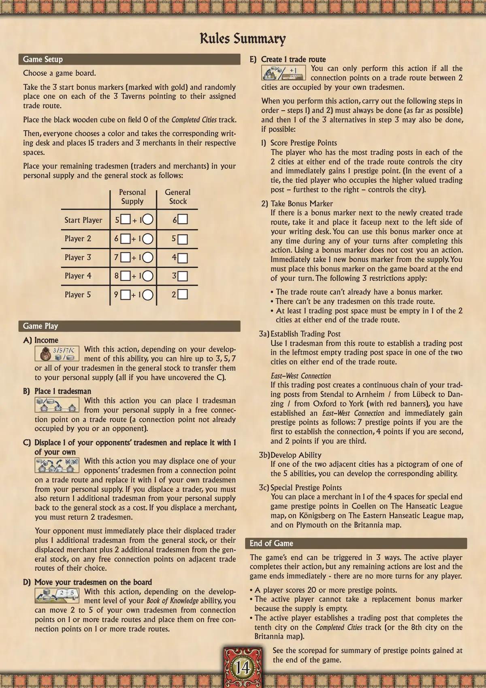
📝 第 14 页 AI 机翻对照（点击展开）
1414
规则摘要
规则摘要
游戏设置
游戏设置
选择一个游戏版图。
拿取3个起始奖励标记（标记为金色）并随机
将每个标记放置在3个酒馆上，指向它们分配的
贸易路线。
将黑色木制立方体放在已完成城市轨道的0号格。
然后，每位玩家选择一种颜色，并拿取相应的
写字桌，将15名商人和3名商人放置在各自的
格位中。
将你剩余的商人（商人和商人）按以下方式放入
你的个人储备和公共库存中：
个人储备 公共库存
起始玩家 5 + 1 6
玩家2 6 + 1 5
玩家3 7 + 1 4
玩家4 8 + 1 3
玩家5 9 + 1 2
游戏进行
游戏进行
A) 收入
A) 收入
通过此行动，根据你对此能力的
发展程度，你可以雇佣公共库存中
最多3、5、7名或全部你的商人，
将他们转移到你的个人储备中（如果你已解锁C，则全部转移）。
B) 放置1名商人
B) 放置1名商人
通过此行动，你可以从你的个人储备中
将1名商人放置在贸易路线上一个空闲的
连接点（一个未被你或对手占据的连接点）。
C) 替换1名对手的商人并放置1名
C) 替换1名对手的商人并放置1名
你自己的商人
你自己的商人
通过此行动，你可以将对手的一名商人
从贸易路线上的一个连接点替换为你自己的
1名商人（来自你的个人储备）。如果你替换的是一名商人，
你还必须从你的个人储备中额外返回1名商人
到公共库存作为成本。如果你替换的是一名商人，
你必须返回2名商人。
你的对手必须立即将他们被替换的商人
加上1名来自公共库存的额外商人，或者他们被替换的商人
加上2名来自公共库存的额外商人，
放置在他们选择的相邻贸易路线上任何空闲的连接点。
D) 移动你版图上的商人
D) 移动你版图上的商人
通过此行动，根据你的知识之书能力
的发展等级，你可以将2到5名你自己的商人
从1条或多条贸易路线上的连接点移动，
并将他们放置在1条或多条贸易路线上空闲的
连接点。
E) 创建1条贸易路线
E) 创建1条贸易路线
只有当2个城市之间一条贸易路线上的所有
连接点都被你自己的商人占据时，你才能执行此行动。
当你执行此行动时，按顺序执行以下步骤——
步骤1)和2)必须始终完成（尽可能完成），
然后如果可能，还可以完成步骤3中的3个替代方案中的1个：
1) 获得声望点
在每个贸易路线两端的2座城市中，拥有最多贸易站的玩家控制该城市，并立即获得1点声望点。（如果平局，则占据价值更高（最右侧）的贸易站的平局玩家控制该城市）。
2) 获取奖励标记
如果新创建的贸易路线旁边有奖励标记，请获取它并将其正面朝上放置在你的写字桌左侧。你可以在完成此行动后的任何回合的任何时候使用一次此奖励标记。使用奖励标记不消耗你的行动。立即从供应堆中获取1个新的奖励标记。你必须在你的回合结束时将此奖励标记放置在游戏版图上。以下3个限制条件适用：
• 贸易路线上不能已经有奖励标记。
• 此贸易路线上不能有任何商人。
• 贸易路线两端的2座城市中，至少有1座城市的1个贸易站位置必须为空。
3a) 建立贸易站
使用此路线上的1个商人在贸易路线两端的两座城市之一的最左侧空贸易站位置建立一个贸易站。
东西连接
如果这个贸易站创建了一个从施滕达尔到阿纳姆/从吕贝克到但泽/从牛津到约克（带有红色旗帜）的连续的你的贸易站链，你就建立了一个东西连接，并立即获得以下声望点：如果你是第一个建立连接的获得7点声望，第二个获得4点，第三个获得2点。
3b) 发展能力
如果两个相邻城市之一有5种能力之一的象形图，你可以发展相应的能力。
3c) 特殊声望点
你可以在汉萨同盟地图上的科伦的4个特殊游戏结束声望点空间之一，在东汉萨同盟地图上的柯尼斯堡，以及在不列颠尼亚地图上的普利茅斯放置一个商人。
游戏结束
游戏结束
游戏可以通过3种方式触发。当前玩家完成他们的行动，但任何剩余的行动都将丢失，游戏立即结束 - 任何玩家都没有更多回合。
• 有玩家获得20点或更多声望点。
• 当前玩家无法获取替换奖励标记，因为供应堆已空。
• 当前玩家建立一个贸易站，完成了已完成城市轨道上的第十座城市（或不列颠尼亚地图上的第八座城市）。
请查看记分表，了解游戏结束时获得的声望点总结。